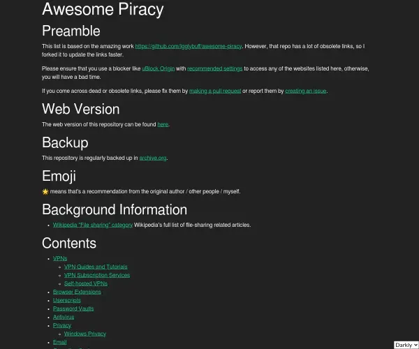
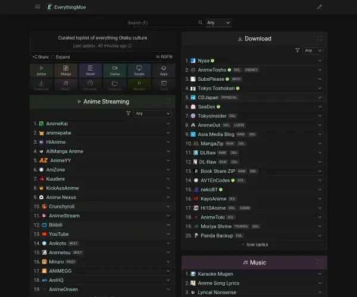
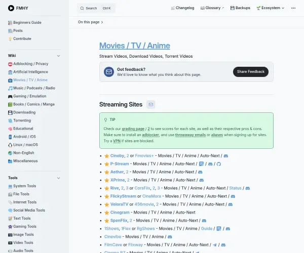
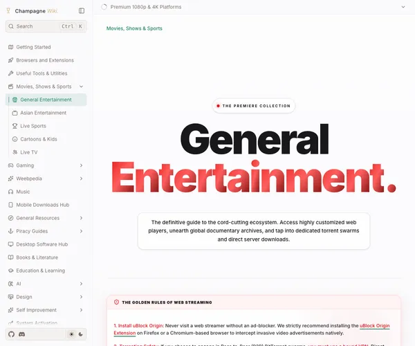
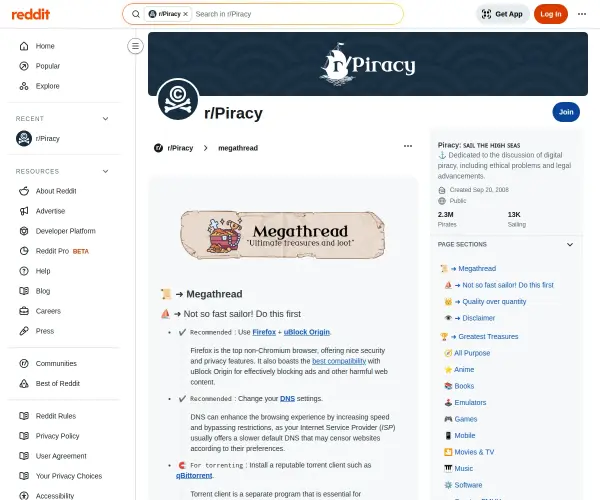
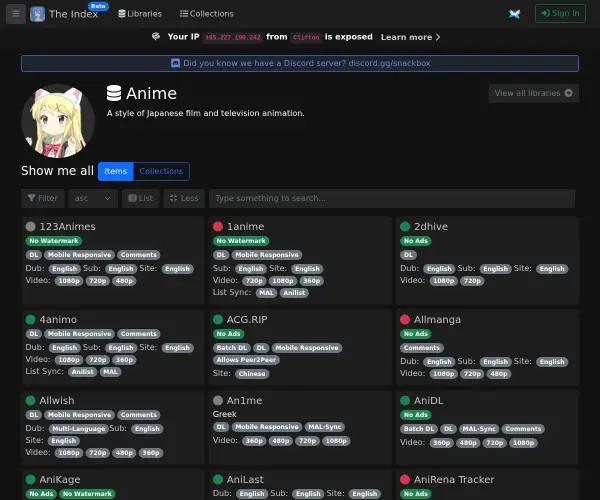
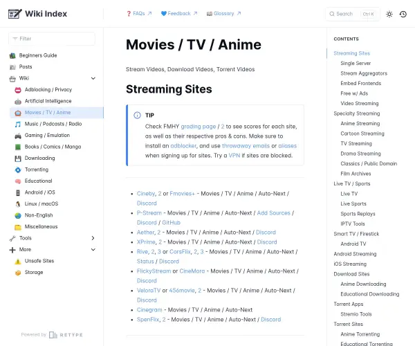
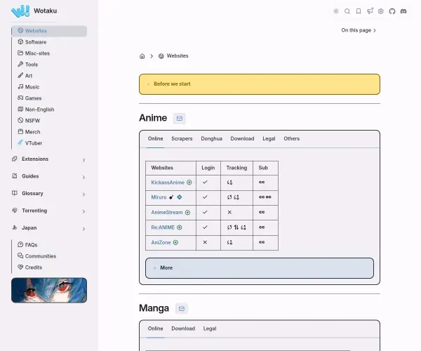

Best free indexes streaming sites (2026)
The best free streaming indexes - searchable link libraries that let you find sources for almost any movie or show in one place.
Best indexes sites
| Rank | Site | Movies | TV Shows | Ad-Score | Preview |
|---|---|---|---|---|---|
| 1 | Awesome Piracy | ||||
 | |||||
| 2 | EverythingMoe | ||||
 | |||||
| 3 | FMHY | ||||
 | |||||
| 4 | Champagne Wiki | ||||
 | |||||
| 5 | r/Piracy | ||||
 | |||||
| 6 | The Index | ||||
 | |||||
| 7 | Wiki Index | ||||
 | |||||
| 8 | Wotaku | ||||
 | |||||
The best free streaming indexes - searchable link libraries that let you find sources for almost any movie or show in one place.
Use streaming indexes to find any title
An index is a directory of links rather than a streaming site itself. Indexes are invaluable when a specific title is missing from your usual platform, because they gather sources across many sites in one search box.
Because indexes link outward, quality and safety depend on the source you pick - stick to well-reviewed entries and keep your ad-blocker on.
Getting the most out of an index
- Search the exact title plus the year for the best matches
- Prefer entries with recent comments or healthy ratings
- Cross-check a source against our main list before trusting it
- Keep anti-malware protection active when following external links
Frequently asked questions
What is a streaming index?
A searchable directory that links to many streaming sources for a title, rather than hosting content itself.
Are streaming indexes safe?
They link to third-party sites, so safety varies. Use an ad-blocker, prefer popular entries, and keep malware protection on.
When should I use an index?
Use one when a specific movie or show is not available on your preferred streaming site and you want to compare sources quickly.